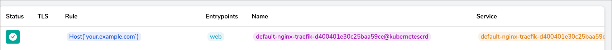

Create NGINX ingress with traefik in M3S
With these example we will create a nginx Webserver and publish the Website with the traefik 2.x ingress.
kubectl create -f nginx.yaml
apiVersion: apps/v1
kind: Deployment
metadata:
name: nginx-deployment
namespace: default
labels:
app: nginx
spec:
selector:
matchLabels:
app: nginx
replicas: 1
template:
metadata:
labels:
app: nginx
spec:
containers:
- name: nginx
image: nginx:1.14.2
ports:
- name: web
containerPort: 80
kubectl create -f nginx-service.yaml
apiVersion: v1
kind: Service
metadata:
name: nginx-service
spec:
ports:
- protocol: TCP
name: web
port: 80
selector:
app: nginx
kubectl create -f nginx-traefik.yaml
apiVersion: traefik.containo.us/v1alpha1
kind: IngressRoute
metadata:
name: nginx-traefik
namespace: default
spec:
entryPoints:
- web
routes:
- match: Host(`your.example.com`)
kind: Rule
services:
- name: nginx-service
port: 80
In the traefik Dasboard we will see our new rule:

Now we can try to access nginx via traefik. First, we have to now the port of the k3sagent.
dig _k3sagent._tcp.k3s.slave.mesos SRV
; <<>> DiG 9.11.4-P2-RedHat-9.11.4-26.P2.el7_9.3 <<>> _k3sagent._tcp.k3s.slave.mesos SRV
;; global options: +cmd
;; Got answer:
;; ->>HEADER<<- opcode: QUERY, status: NOERROR, id: 58547
;; flags: qr aa rd ra; QUERY: 1, ANSWER: 2, AUTHORITY: 0, ADDITIONAL: 1
;; QUESTION SECTION:
;_k3sagent._tcp.k3s.slave.mesos. IN SRV
;; ANSWER SECTION:
_k3sagent._tcp.k3s.slave.mesos. 60 IN SRV 0 1 31866 k3sagent-cuoph-s1.k3s.slave.mesos.
_k3sagent._tcp.k3s.slave.mesos. 60 IN SRV 0 1 31865 k3sagent-cuoph-s1.k3s.slave.mesos.
;; ADDITIONAL SECTION:
k3sagent-cuoph-s1.k3s.slave.mesos. 60 IN A 192.168.1.20
;; Query time: 4 msec
;; SERVER: 127.0.0.1#53(127.0.0.1)
;; WHEN: Mon Jun 14 11:00:01 UTC 2021
;; MSG SIZE rcvd: 170
As we can see, the port is 31865 for the port 80 and 31866 for the port 443. The agents IP is 192.168.1.20. If we have multiple k3sagents, we will see all IP adresses.
These IP adress we have to add into the /etc/hosts file.
192.168.1.20 your.example.com
Now we can access nginx:
curl -vvv your.example.com:31865